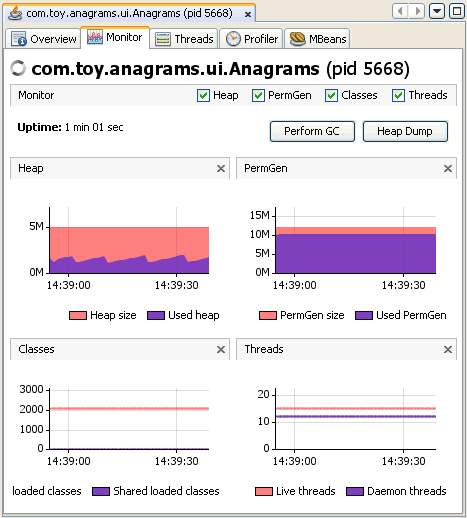

Мониторинг приложения
VisualVM (средство VisualVM) представляет данные локальных и удалённых приложений на вкладке, относящейся к этому приложению.
Когда вы открываете приложение в VisualVM, каждое приложение открывается на новой вкладке в главном окне.
Можно держать открытыми несколько вкладок приложений.
Мониторинг приложения
С помощью VisualVM можно наблюдать за локальным приложением и просматривать в реальном времени сводные данные о куче памяти, активности потоков
и классах, загруженных в JVM (Java Virtual Machine, виртуальная машина Java).
Мониторинг приложения создаёт небольшую нагрузку и может использоваться в течение длительного времени.

Данные мониторинга отображаются на следующих графиках:
- Heap (куча). График Heap показывает общий размер кучи и сколько кучи сейчас используется.
Это те же величины, которые приложение на технологии Java (приложение Java) может получить вызовами java.lang.Runtime.totalMemory()
и java.lang.Runtime.freeMemory().
- PermGen (постоянное поколение). График PermGen показывает изменения области постоянного поколения со временем.
Постоянное поколение — это область кучи, где хранятся объекты классов и методов.
Если приложение загружает очень большое число классов, размер постоянного поколения может потребоваться увеличить параметром -XX:MaxPermSize.
- Classes (классы). График Classes даёт обзор общего числа загруженных классов и разделяемых классов.
- Threads (потоки). Графики Threads дают обзор числа живых потоков и потоков-демонов в JVM приложения.
С помощью VisualVM можно снять Thread Dump (снимок потоков), если нужно зафиксировать и просмотреть точные данные о потоках приложения
в конкретный момент времени.
Подробнее о работе с потоками см. в следующем документе:
На вкладке мониторинга есть кнопки, которыми можно выполнить следующие действия:
- Perform GC (выполнить сборку мусора). Нажмите Perform GC, чтобы немедленно выполнить GC (Garbage Collection, сборка мусора).
- Heap Dump (снимок кучи). Нажмите Heap Dump, чтобы снять снимок кучи.
Когда вы снимаете снимок кучи, на вкладке приложения открывается вкладка со снимком кучи.
Под узлом приложения в окне Applications (приложения) появляется узел снимка кучи.
Подробнее о работе со снимком кучи см. в следующем документе:
Вернуться к указателю документации VisualVM